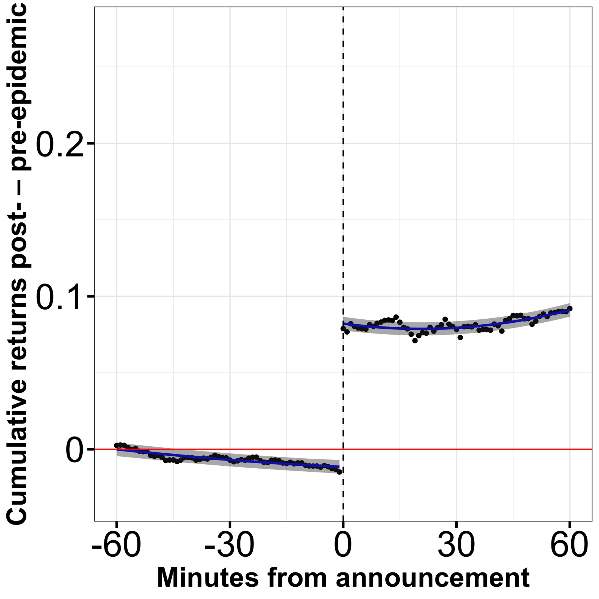
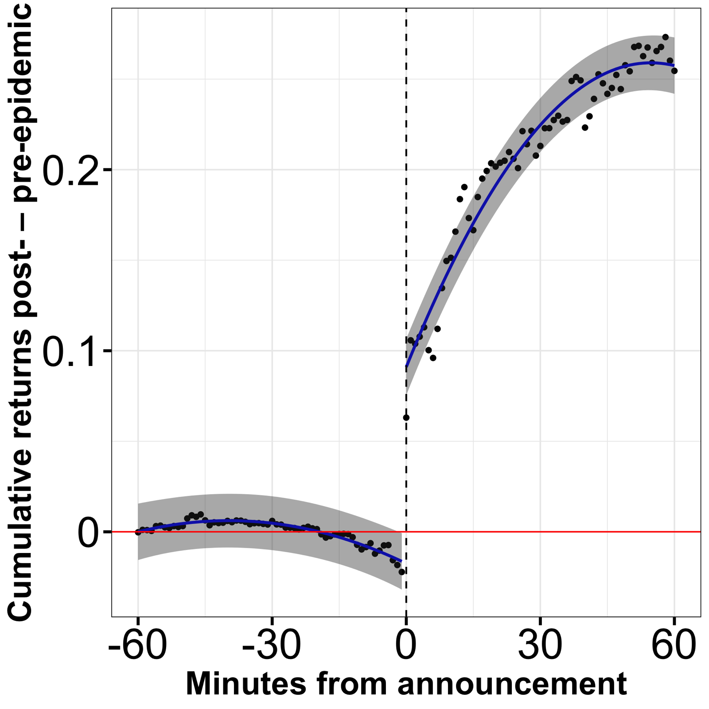
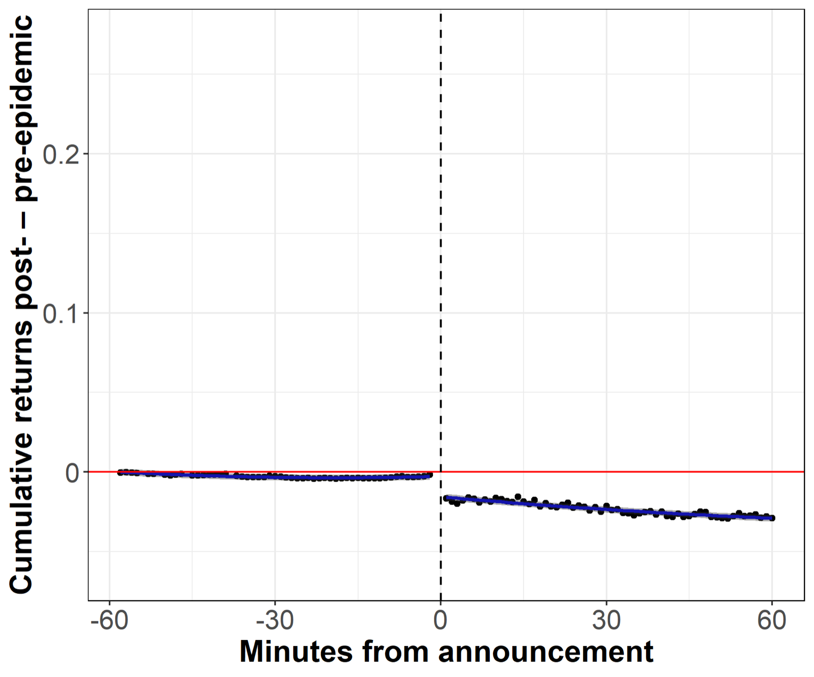
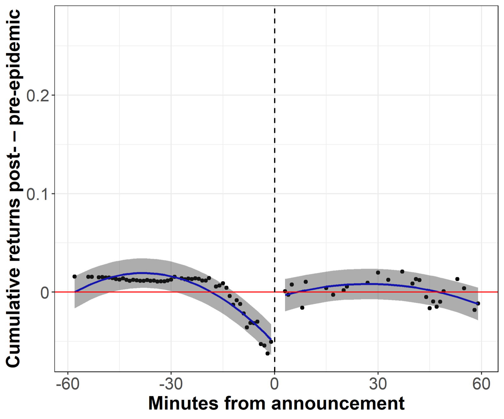

We hand-collected every COVID-19 medical announcement in 20 countries (case reports, live-streamed briefings, and speeches by presidents and prime ministers) with minute-level timestamps. Then we tracked equities and sovereign bonds in a ±60-minute window around each one.
Take an investor with Epstein–Zin preferences who cares about when uncertainty is resolved (risk aversion γ > 1). This investor splits wealth between bonds and equities, and equity payouts carry risk θ with variance σ².
An announcement is an unbiased signal about θ that lowers posterior variance. On average, then, it should push investors from bonds into equities. Equity prices should rise. Bond prices should stay put if bond supply is flat and dip if it slopes upward.
For each country we looked up official press statements on the Ministry of Health website. When a statement had no official timestamp, we used the Twitter account of the Ministry or another government body (for example, the Prime Minister's), and if that failed, major local newspapers. We repeated these steps several times a week throughout the pandemic. Monetary and fiscal policy announcements are excluded.
Weekly counts built from covid19_announcements.csv (UTC timestamps). Hover over a bar for the breakdown.
Most announcements come out at a regular, pre-set time. Some don't: the first Coronavirus Task Force briefing in the U.S. started at 3:40 p.m. EST, earlier than the White House briefings that followed. It was announced on Twitter 2.5 hours in advance, so we count it as pre-scheduled. Our main results hold with and without irregular announcements.

| Country | Announcements | Case reports | Live-streamed | President / PM | Regularly scheduled |
|---|---|---|---|---|---|
| Argentina AR | 605 | 33% | 64% | 3% | 90% |
| Australia AU | 678 | 78% | 4% | 1% | 34% |
| Brazil BR | 975 | 64% | 26% | 2% | 54% |
| Canada CA | 791 | 58% | 21% | 18% | 31% |
| Switzerland CH | 627 | 78% | 9% | 13% | 73% |
| Chile CL | 896 | 59% | 29% | 3% | 45% |
| China CN | 721 | 82% | 3% | 1% | 75% |
| Hong Kong CN-HK | 1,376 | 55% | 2% | 1% | 100% |
| Colombia CO | 1,006 | 58% | 34% | 8% | 79% |
| Germany DE | 283 | 87% | 1% | 7% | 61% |
| Spain ES | 570 | 83% | 1% | 17% | 63% |
| France FR | 567 | 77% | 16% | 6% | 84% |
| India IN | 759 | 89% | 1% | 1% | 63% |
| Italy IT | 654 | 74% | 17% | 8% | 81% |
| Japan JA | 332 | 59% | 5% | 5% | 32% |
| South Korea KR | 642 | 80% | 1% | 4% | 72% |
| Mexico MX | 1,803 | 10% | 45% | 21% | 51% |
| New Zealand NZ | 457 | 61% | 29% | 7% | 72% |
| United Kingdom UK | 711 | 82% | 11% | 7% | 68% |
| United States US | 1,386 | 17% | 54% | 7% | 33% |
| Total | 15,839 | 64% | 18% | 7% | 62% |
Table 1 of the paper. Sample: 01/01/2020–02/22/2022.
Each dot is the average cumulative return, across countries and announcements, from buying 60 minutes before an announcement and holding for 120 minutes. It's measured relative to the same clock time before the epidemic, which removes the need for country and day fixed effects. The solid line and band are a quadratic fit with a break at the announcement (HAC standard errors).


Equity values jump when the announcement comes out, in both advanced and emerging economies.
The jump holds for the next hour in advanced economies and grows in emerging ones.
It holds for bad-news announcements only, after dropping the top and bottom 1% of news days, and in the sample through December 2020.

